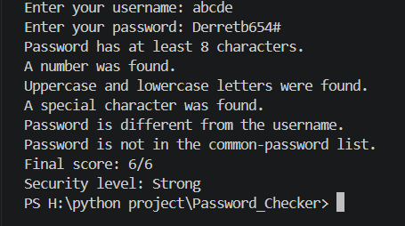
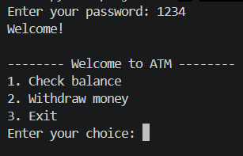
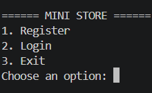
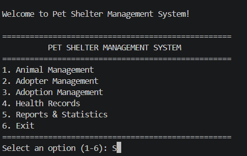

Featured Projects
A selection of projects developed while learning programming and software development.

Password Checker
A Python project focused on checking password characteristics and validating password input.
View Repository ↗
ATM System
A command-line ATM application developed as a practical Python programming project.
View Repository ↗
Mini Store
A small store management project built to practice Python and software organization.
View Repository ↗
Pet Shelter
A pet shelter management project with JSON-based data storage.
View Repository ↗